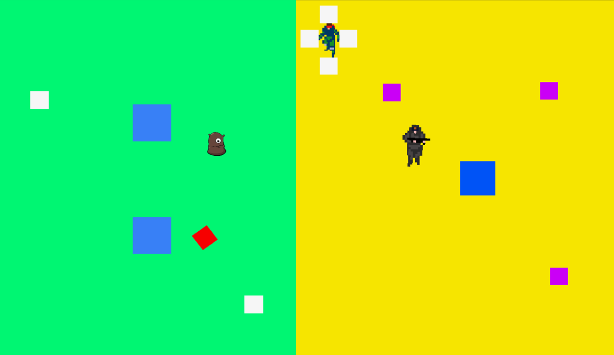

Context
3 Week Project. The goal of was to create a game with a complete narrative with several instances of foldback structure.
Team: Clinton Walsh, Harkeerat Chhina, Darren MacPhail
Role: Level Design, Cut-scenes, Playtesting
Tools: Unity, C#, Java
Narrative
Set in the year 1986, a few days after the election of United States President Lex Mathension his daughter,
Leia Mathension is kidnapped by an unknown Terrorist group. Players will take control of Rex, a black ops mercenary who is
a master of hand to hand combat and stealth. Can Rex infiltrate the Terrorists’ various bases, uncover their identity,
motives and most importantly, save the president’s daughter?
Process
We started whiteboxing early in the development process to develop our internal mechanics. We gradually
insereted assets and artifacts, as our artist created content. Levels were first sketched onto paper and then translated
into game. They were designed such that the initial and final level were created first. This approach was used to determine
the maximum and minimum difficulty of the game. By using this particular approach, it allowed for a more fluid transition
of difficulty. While we tried to generate progressively harder level, ultimately playability and game balance were left to
play testers. The final product appears 2D, but is designed in 3D to take advantage of nav-meshes for AI pathfinding.

AI
The AI, has 3 states: The patrol state is defined by the nav-mesh markers placed in the scene.
The investigate state activates when the players enters the AI's vision cone but manages to evade the AI. the
AI will then proceed to search 360 degrees in case the player is in the AI's blind spot before return back to the
patrol state. The alert state is when the player is actively in the AI's vision radius.

Playtesting
Testing was primarily conducted between a single tester and a member of our team. This choice was made to prevent
influences from other play testers. During game play no explanation was provided to make sure that players understood the instructions
and were able to independently play the game without outside assistance. As the moderator, I only interfered if the player was
extremely confused or if they found a bug or error with the game. After playing through the game, or at least part of the game,
we presented a simple list of questions, as see in figure 3, such as; “Did you understand how to bypass enemies? What was you
preferred plan in getting through level x?”. We performed three different tests with, with three different testers, one being a
novice gamer with the others describing themselves as experts or advanced. The main goal of the questions was to determine whether
or not our game's mechanics were effectively taught and that players could grasp our mechanics as well as understand the narrative.

Results
Feedback from our playtesting session indicated our punch mechanic was not intuitive. Players can choose to kill or
temporarily knock out enemy AI. This choice will ultimately change how the game plays out. Initially the difference between a kill
and knockout was determined by how hard a player presses the trigger button on a controller. Plyers were either pulled the trigger
button all the way or could not determine the threshold between kill and knockout. We separate the mechanic between two buttons where
the left trigger would kill and the right trigger became knockout. Other changes included level redesign, and arrangement as some levels
were too easy while others were proving to be quite difficult. Certain levels were scrapped due to too much congestion. Finally we made
the AI’s line of site smaller to better fit our level sizes.
In further iterations we would like to add different mechanics such as lasers and cameras, a visual redesign, and more complex
level design.